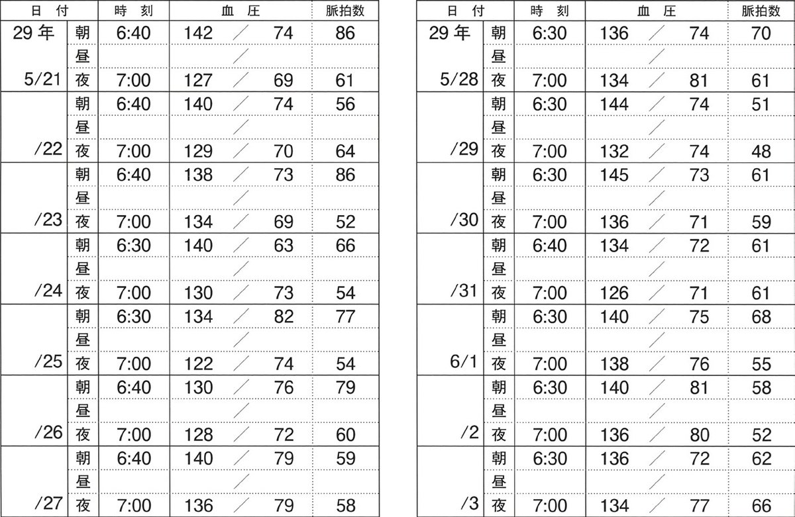

| 項目 | 内容 |
|---|---|
| 朝の測定条件 | 起床後1時間以内・服薬前・朝食前・排尿後に座位で1〜2分安静後 |
| 夜の測定条件 | 就寝前に座位で1〜2分安静後 |
| ×排尿前 | 膀胱充満→血圧上昇→誤差の原因 |
| 上腕測定 | 自動電子血圧計（上腕式推奨） |
| 回数 | 1機会に2回（その平均を記録） |
| 患者像 | 第一選択薬 |
|---|---|
| 高齢者（一般） | Ca拮抗薬（DHP系）が第一選択（安定した降圧・有益なエビデンス） |
| DM・CKD・蛋白尿 | ARB/ACE阻害薬（腎保護効果） |
| 心不全（HFrEF） | ACE阻害薬/ARB+β遮断薬+MRA |
| AMI後 | β遮断薬+ACE阻害薬（心保護） |
| 妊娠 | メチルドパ・ヒドララジン（安全性確立） |
| 妊婦禁忌 | ACE阻害薬・ARB（胎児奇形・腎機能障害） |
| 検査 | 用途・なぜ不適切 |
|---|---|
| ×視野検査 | 視野異常（眼前暗黒感とは異なる）の評価。ODには不要 |
| ×脳波検査 | てんかん（けいれん発作）を疑う場合。本例は発作なし |
| ×温度眼振検査 | 内耳性めまい（前庭機能）を評価。本例はめまい≠回転性 |
| ×重心動揺検査 | 小脳・前庭障害の評価。神経学的異常なし |
| 降圧薬 | 副作用 |
|---|---|
| サイアザイド系利尿薬 | 光線過敏性皮膚炎・低K血症・高尿酸血症・高血糖・低Na血症 |
| β受容体遮断薬 | 運動耐容能低下（心拍数上昇抑制）・気管支攣縮・徐脈・冷感・悪夢 |
| α受容体遮断薬 | 起立性低血圧（初回投与時）・反射性頻脈 |
| × Ca拮抗薬 | 冠動脈攣縮 × →むしろ抑制（DHP系）・浮腫・頭痛・顔面紅潮・歯肉肥厚（ニフェジピン） |
| × ACE阻害薬 | 閉塞性肺機能障害 ×→正しくは空咳（乾性咳嗽）・高K血症・血管浮腫 |
| 選択肢 | 評価 |
|---|---|
| × ａ「禁酒しましょう」 | 機会飲酒であり問題なし→禁酒指導は不要 |
| × ｂ「運動はもう必要ありません」 | 運動継続は血圧管理に重要→中止を勧めるのは誤り |
| × ｃ「内服薬は時々休みましょう」 | 降圧薬は継続が基本→中断指導は危険 |
| ○ ｄ「家庭血圧の測定を続けてください」 | 血圧管理の継続評価に必須→正解 |
| × ｅ「定期的な健康診査は受けなくてよいです」 | 高血圧患者は合併症モニタリングのため定期受診が必要 |
| 選択肢 | 理由 |
|---|---|
| × ｂ冷湿布 | 冷感を悪化させる・効果なし |
| × ｃアドレナリン静注 | アナフィラキシーショックの治療（本例は迷走神経反射） |
| × ｄ呼吸回数増加 | 過換気を促進→CO2低下→さらに症状悪化 |
| × ｅ局所麻酔薬 | 採血後の処置→適応なし |

| 選択肢 | 評価 |
|---|---|
| × ａ利尿薬追加 | 家庭血圧が良好→追加の必要なし。高齢者での電解質異常リスク |
| × ｂβ遮断薬追加 | 心不全・頻脈等の適応なし→不要 |
| ○ ｃ現在の投薬継続 | 83歳の目標血圧内→現状維持が最適 |
| × ｄCa拮抗薬減量 | 診察室血圧144→高齢者目標内。減量の根拠なし |
| × ｅACE阻害薬増量 | 家庭血圧良好→増量不要。高齢者の過降圧リスク |
| 選択肢 | 評価 |
|---|---|
| × ａ手首測定を推奨 | 上腕式が推奨（手首式は姿勢の影響を受けやすく精度が低い） |
| ○ ｂ早朝高血圧の診断に有用 | 起床後1時間以内に測定→早朝高血圧を検出できる |
| × ｃ150/90以上が高血圧基準 | 家庭血圧の高血圧基準は135/85mmHg以上（診察室より5低い） |
| × ｄ服薬アドヒアランスに影響しない | 家庭血圧測定→自己管理意識向上→アドヒアランス改善に有用 |
| × ｅ診察室血圧が予後予測に優れる | 家庭血圧の方が予後予測に優れるとされている |
| 質問 | 評価 |
|---|---|
| × ａ「食欲が増加しましたか」 | 食欲増加は転倒と無関係→有用性が低い（正解） |
| ○ ｂ「内服薬が変わりましたか」 | 降圧薬の変更→過降圧→起立性低血圧→転倒の原因となりうる |
| ○ ｃ「動悸や胸痛はありましたか」 | 不整脈・虚血性心疾患→心原性失神→転倒の可能性 |
| ○ ｄ「目の前が真っ暗になりましたか」 | 眼前暗黒感→起立性低血圧・心原性失神・大脳虚血の可能性 |
| ○ ｅ「手足の力が弱い感じはありましたか」 | 片側の力抜け→TIA・脳梗塞の可能性 |
| 指導 | 評価 |
|---|---|
| ○ ａ禁煙 | 喫煙20本/日×32年→心血管リスク大幅増加→高優先度 |
| × ｂ禁酒（優先度低） | ビール350ml週2回は少量→高血圧への影響小→優先度低（正解） |
| ○ ｃ減塩 | 塩分摂取を意識していない→塩分過多の可能性→高優先度 |
| ○ ｄ運動の奨励 | 運動なし・BMI過重→有酸素運動で降圧効果あり |
| ○ ｅ労働時間の短縮 | 週65時間以上→過労→交感神経亢進→高血圧悪化→重要 |
| 選択肢 | 評価 |
|---|---|
| ○ ａ低用量から開始 | 高齢者の基本原則（正解） |
| × ｂ短時間作用型を選択 | 短時間型→血圧変動→長時間作用型が推奨 |
| × ｃ3か月食事制限のみ | 184/112＋左室肥大あり→臓器障害あり→薬物療法も必要 |
| × ｄサイアザイド系を第一選択とはしない | サイアザイド系は高齢者にも有効→第一選択に含まれる |
| × ｅ降圧目標<120/80 | 78歳→目標<150/90（75歳以上のガイドライン） |
| 選択肢 | 評価 |
|---|---|
| ○ ａ「禁煙が必要です」 | 喫煙40年×20本/日→心血管リスク増大→禁煙は必須 |
| × ｂ「短時間作用型の降圧薬」 | 早朝高血圧には長時間作用型が適切→逆 |
| × ｃ「家庭血圧は週1回」 | 家庭血圧は毎日（朝晩）測定が推奨 |
| × ｄ「就寝前の血圧が正常なので心配なし」 | 早朝高血圧は脳卒中リスクが高い→放置してはいけない |
| ○ ｅ「体重減量で起床時血圧低下が期待できます」 | BMI 27.7→過体重→減量で5〜10mmHg程度の降圧効果 |
| 選択肢 | 理由 |
|---|---|
| × ｂ指鼻試験 | 小脳失調の評価→起立性低血圧の原因検索とは無関係 |
| × ｃ棘突起叩打 | 脊椎病変の評価→本例では不要 |
| × ｄBabinski徴候 | 錐体路障害の評価→神経学的原因が疑われる場合 |
| × ｅ上肢Barré試験 | 上肢の錐体路障害評価→本例では不要 |
| 検査 | 評価 |
|---|---|
| × ａ脳波 | てんかんを疑う場合。まず起立試験で確認してから |
| × ｂ頭部CT | 神経症状（片麻痺・失語）がなければ後でよい |
| × ｃ心エコー | 心疾患（弁膜症・心筋症）を疑う場合→まず起立試験 |
| × ｄHolter心電図 | 不整脈を疑う場合→まず起立試験で起立性低血圧を確認 |
| ○ ｅ立位での血圧測定 | 最も簡便・直接的に診断可能→まず行うべき検査 |
| 選択肢 | 評価 |
|---|---|
| × ａ禁酒 | ビール350ml/日（約14g/日）→過量だが、まず血圧確認が優先 |
| × ｂ運動療法 | 有効だがまず血圧の実態把握が先 |
| × ｃ体重減量 | BMI正常（70kg/175cm=22.9）→減量の優先度低 |
| × ｄ降圧薬内服 | 初診での1回測定のみ→白衣高血圧かもしれない→薬を即開始しない |
| ○ ｅ家庭血圧の測定 | 初診の高血圧→まず家庭血圧で実態確認 |
| 選択肢 | 評価 |
|---|---|
| × ａ「緊急の降圧治療が必要です」 | 高血圧緊急症（臓器障害を伴う場合）でなければ緊急ではない |
| × ｂ「拡張期血圧が正常なので問題ない」 | 収縮期高血圧は老年者で多く脳卒中リスクが高い→問題あり |
| × ｃ「80歳以上では平均的な血圧です」 | 平均的であっても治療が必要→正当化しない |
| × ｄ「1年以内に合併症の可能性は5割以上」 | 根拠なし・患者を不安にさせる誤情報 |
| ○ ｅ「治療によって合併症を予防できます」 | 高齢者高血圧でも降圧治療の恩恵がある（HYVET試験等） |
| 選択肢 | 評価 |
|---|---|
| × ａ塩分制限 | 高血圧と確定していない→指導は時期尚早 |
| × ｂ降圧薬の開始 | 1回の高値のみ・診察室正常→降圧薬開始は早すぎる |
| × ｃ二次性高血圧の除外 | 高血圧が確定していない段階で二次性検査は不要 |
| ○ ｄ高血圧に対する不安の受容 | 不安で来院した患者の気持ちを受け止め、正確な説明をする |
| × ｅ合併症についての網羅的な説明 | 高血圧が確定していない状況で合併症説明→不要な不安を与える |